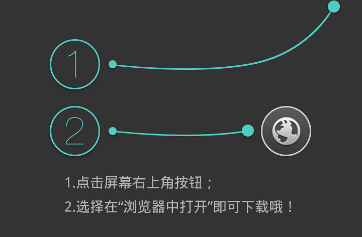

追梦的路不会孤独
音乐来源
我的
音乐
地产
股市
软件

[ti:追梦的路不会孤独] [ar:小海] [al:] [00:00.001]追梦的路不会孤独 - 小海 [00:00.50]曲:小海，词:小海，专辑:北京再见 [00:00.90]爱音乐，爱生活 [00:13.44]又是落叶的季节 [00:17.91]转眼又过去三两年 [00:21.84]这城市的一切 没变 [00:28.54]再也不会触碰 [00:32.99]华丽的衣裳 [00:36.49]已经习惯了 简单 [00:42.34]我曾深爱的女人 [00:47.23]你在哪 [00:50.00]我曾深爱的女人 [00:54.89]我已经忘记你了 [00:59.59]追梦的人呐 [01:03.40]不停在走呀 [01:07.01]路途再远 [01:11.00]不会孤独 [01:14.78]追梦的人呀 [01:18.55]不停在走呀 [01:22.00]路途再远 [01:26.00]不会孤独 [01:59.60]追梦的人呀 [02:03.20]不停再走呀 [02:07.90]路途再远 [02:10.50]不会孤独 [02:14.40]追梦的人呀 [02:18.30]不停在走呀 [02:23.00]路途再远 [02:25.70]不会孤独 [02:29.90]追梦的人呐 [02:33.00]不停在走呀 [02:37.96]路途再远 [02:40.50]不会孤独 [02:44.50]追梦的人呐 [02:48.10]不停在走呀 [02:52.80]路途再远 [02:55.90]不会孤独 [02:59.30]啦啦啦 啦哦 咿呀 咿呀 云兜 [03:15.00]呀呀哦 哦哦哦 咿呀 咿呀 云兜 [03:29.78]追梦的人呀 [03:33.08]不停在走哦 [03:37.68]路途再远 [03:40.78]不会孤独 [03:44.58]追梦的人呀 [03:48.18]不停在走呀 [03:52.88]路途再远 [03:55.38]不会孤独 [03:59.88]追梦的人呀 [04:03.08]不停在走 [04:07.88]路途再远 [04:10.48]不会孤独 [04:14.53]追梦的人呀 [04:18.30]不停在走 [04:23.00]路途再远 [04:25.68]不会孤独 [04:29.58]追梦的人呀 [04:32.98]追梦的人呀 [04:37.88]路途再远 [04:40.38]不会孤独 [04:44.68]追梦的人呀 [04:48.08]他不停在走 [04:53.08]路途再远 [04:55.78]不会孤独
请使用高版本浏览器，IE8以及一下不支持canvas